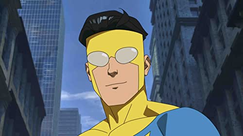
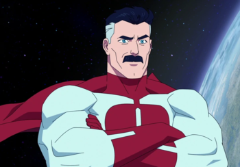
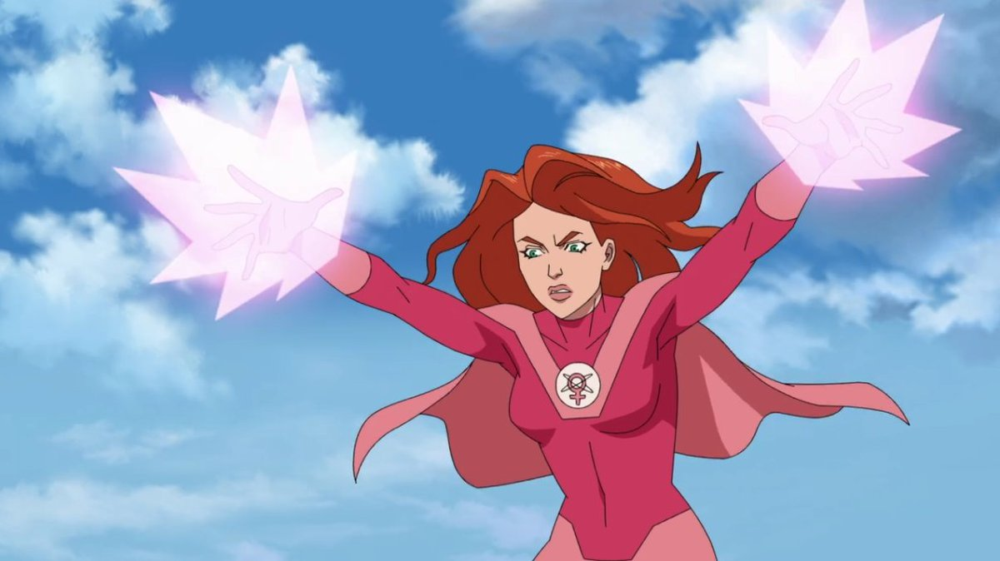
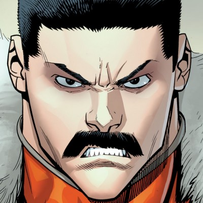
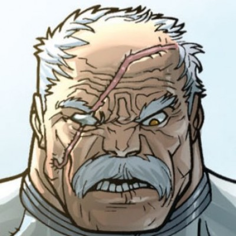
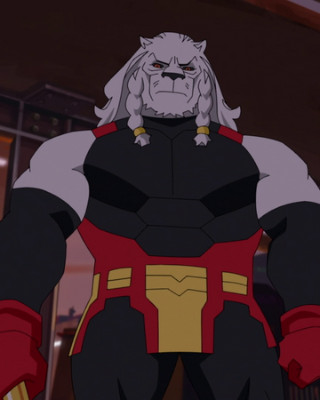

The story of Invincible (without spoilers) is a super hero comic about teenager Mark Grayson(Invincible), son of world famous superhero Omni-Man(Nolan Grayson).
Mark lives in the shadow of his father, until he gets his powers(super strength, flight, and regeneration.) which he uses to fight small class villains, which eventually turn into worldwide threats.
Mark eventually finds a love interest with Atom-Eve, another superhero. Atom-Eve and Invincible fall in love with each other, becoming a duo and fighting side by side.
Mark's half human and half alien. Making his life even harder then it has to be. Mark struggles between being a hero, a student, and friend. Mark's internal struggle makes for a bulk of the story's conflict.
There are many characters in Invincible , too many to list all of them, so we will narrow it down to the three "main characters".
  Invincible(Left) is the main character of the story. His internal conflict between wanting to be a hero and wanting to be college student make up for a bulk of the early story, but he later on embraces being the superhero that earth needs.
Omni-Man(Middle) is the father of Invincible, he comes from an alien race of super warriors, called Viltrumites. His mission is to take over earth, but over time he grows attached to the family he's made and abandons his mission.
Atom-Eve(Right) is the love interest of Invincible. She's a failed government experiment, who becomes a hero. Able to bend atoms to her will, making literally anything she wants. Her and Invincible are inseparable, protecting the world together.
When talking about villains, it's hard to narrow it down because of the seer numbers. From pure story importance and plot, these three are the main villains of the story.
  Thragg(left) is the main villain of Invincible. He is the strongest viltrumite, and also the leader of the Viltrum Empire. His goals are complete domination, and to be the strongest being in existence.
Conquest(middle) is another powerful viltrumite. He works for Thragg as an enforcer. He comes to earth to finish omni-mans unfinished mission. Only to be sent back to Viltrum by Invincible,
Battle Beast(right) is one of the most powerful beings in Invincible. His entire purpose is to find the strongest being and kill them. His lust for battle has made him insane, only caring for the fight.